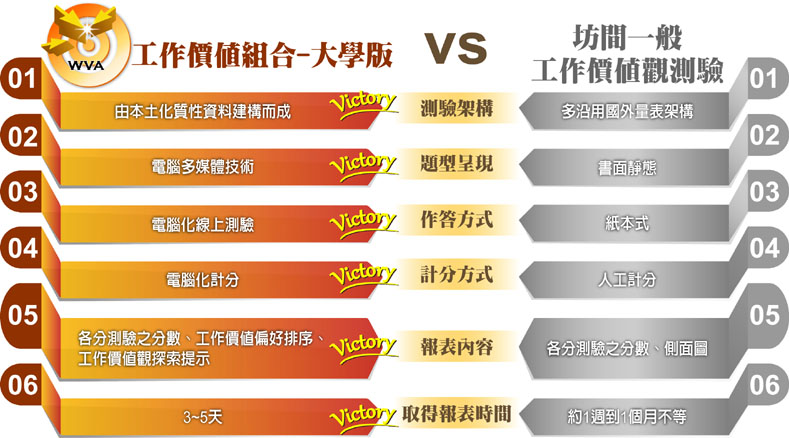

-
- 什麼是工作價值組合？
- 工作價值組合 (work value assembly) 是用來測量個人對於跟工作有關之價值觀的測量工具，多用在學生自我探索、生涯抉擇或企業篩選人才等。 工作價值觀是指個人希望從工作中得到滿足的需求信念，而這些期待亦是幫助個人積極達到正向工作成果的動力。 價值的本身是構成態度和行為的基本元素，在人的行為上扮演了影響知覺、態度和抉擇的重要角色。 在工作層面上，工作價值觀也是幫助我們衡量工作意義或是解釋我們為何工作的主要依據。 然而，現有之工作價值觀測驗的施測方式為紙本式測驗，計分方面需透過人力或是讀卡機制，操作起來曠日費時，在時間效率上較為不佳。 因此，此測驗運用多媒體和計量技術編製「工作價值組合」，透過電腦測量學生多面向之工作價值觀。 藉由本測驗，幫助大學生瞭解自身工作價值觀，將有助於他們進行自我探索，進而培養生涯決策與規劃的能力。 適當的生涯發展測驗能提供多元訊息，作為青少年生涯決策之參考資訊，以及教師與家長進行生涯輔導之工具。

-
- 本測驗的特色與優勢
- 一、電腦化測驗
以電腦化技術與多媒體科技研發測驗，能提高學生作答意願、吸引學生注意力，使測驗結果更為正確有效，能更真實的反應學生的價值觀。
二、貼切的本土價值觀內涵
透過多次深度焦點訪談與開放性問卷彙整出本測驗之價值觀類型，適切地反映出現代台灣本土化之工作價值觀內涵。
三、質與量並重的編製過程
利用質性研究方法分析國人工作價值觀的變化，以嚴謹的編寫、審閱、修改與潤飾等過程編製測驗內容，並結合量化研究的形式蒐集實徵資料進行驗證，使本測驗同時兼具質性與量化研究之優點。
四、快速獲得測驗結果
採用自動化計分系統，使學生能在最短時間內取得測驗結果，學校教師也可於測驗系統上直接下載與印製測驗結果報表，縮短報表取得的時間，提升作業效率。
五、結合生涯相關測驗
除了本測驗之外，本生涯測驗系統尚有興趣測驗，提供不同面向的觀點，可讓學生瞭解工作價值觀與興趣之間的關係，作為學生進行生涯抉擇之參考資訊。
-
- 信、效度
- 一、信度研究
本測驗以民國105年至106年就讀大學一至四年級的大學學生作為樣本，取樣自台灣北部的學校，共計592人的作答反應資料進行分析。 內部一致性信度的部分，各向度的Cronbach’s alpha係數介於 .84 ~ .91；組成信度則介於0.84～0.91。而再測信度之樣本人數為61人，係數值介於0.57～0.83之間。 綜上所述，本測驗具有良好的試題品質，能夠提供穩定一致的測量。
二、效度研究
本測驗以民國105年至106年就讀大學一至四年級的大學學生作為樣本，取樣自台灣北部的學校，共計592人的測驗結果進行分析。 驗證性因素分析的結果顯示，7個因素間的相關係數介於 .20 ~ .78，而結構模型之適配指標，如NNFI與CFI等均大於0.96、RMSEA與SRMR也符合適配指標之標準。 綜上所述，本測驗具備良好的測量效度，能夠提供有效的測量。
-
- 研發與製作
- 版權所有人：宋曜廷教授
由國立臺灣師範大學心理與教育測驗研究發展中心及數位學習研究室共同開發。